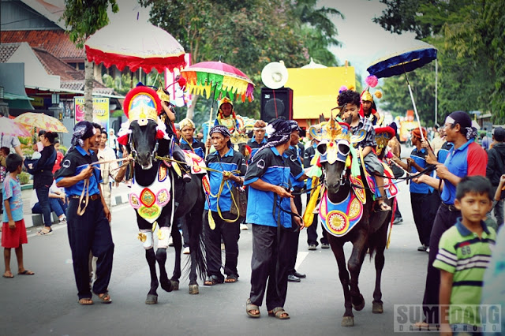
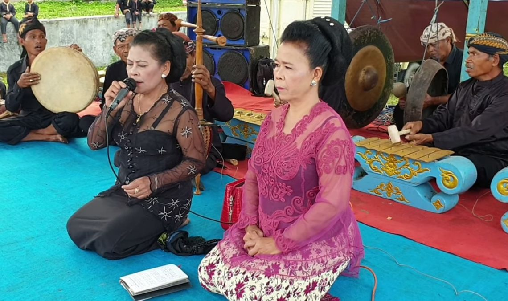
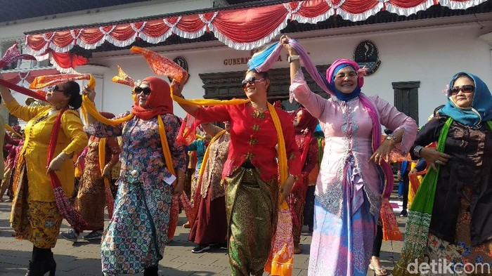
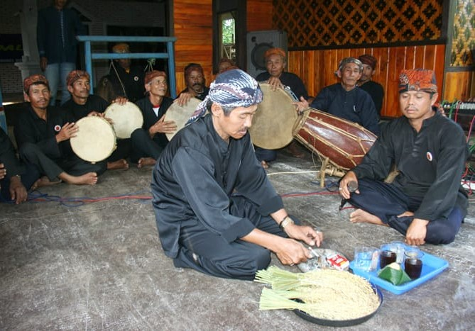
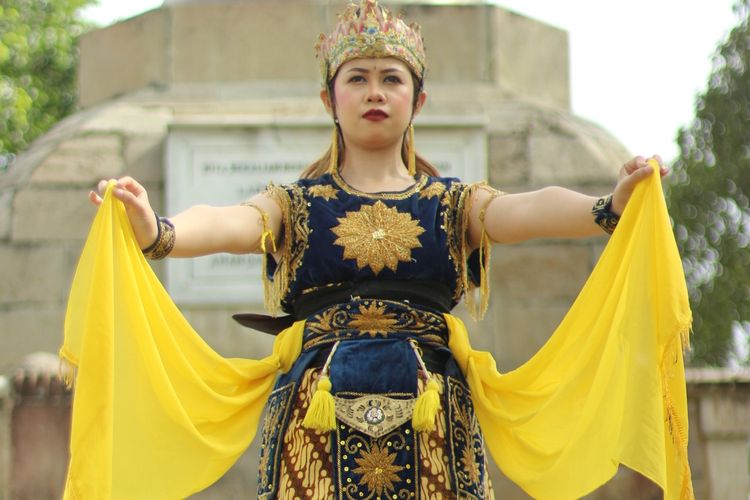
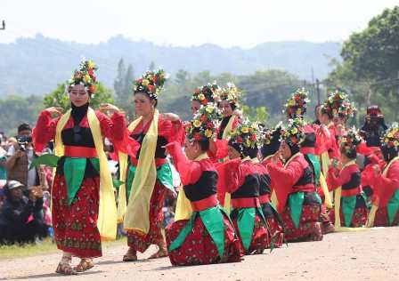
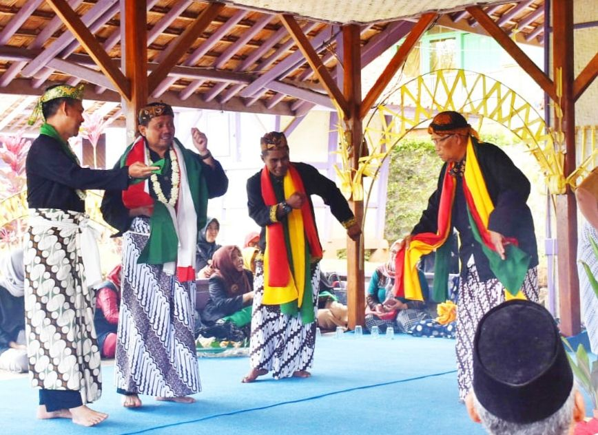

Kuda Renggong
Ikon seni pertunjukan Sumedang di mana kuda dilatih untuk menari mengikuti irama musik. Bukan sekadar hiburan, Kuda Renggong adalah simbol kebahagiaan masyarakat dalam merayakan momen penting seperti khitanan.

Ikon seni pertunjukan Sumedang di mana kuda dilatih untuk menari mengikuti irama musik. Bukan sekadar hiburan, Kuda Renggong adalah simbol kebahagiaan masyarakat dalam merayakan momen penting seperti khitanan.

Singkatan dari "Terbang" dan "Ronggeng". Kesenian ini memadukan musik terbang (rebana) yang ritmis dengan tari ronggeng yang memikat. Bangreng memiliki karakter yang kuat dan sering menampilkan sisi magis serta interaksi antara penari dan penonton yang sangat dinamis.

Ketuk Tilu versi Cikeruhan adalah salah satu akar kesenian Sunda yang sangat otentik. Menggunakan instrumen tiga buah ketuk (gong kecil), kesenian ini melahirkan tarian yang penuh keanggunan. Cikeruhan dikenal sebagai salah satu pusat pelestari gaya tradisional yang mempertahankan pakem-pakem asli dari masa ke masa.

Seni tradisional yang unik dan khas dari wilayah Sumedang. Bingbrek biasanya melibatkan perpaduan suara vokal dan instrumen yang sederhana namun memiliki harmonisasi yang kuat. Kesenian ini mencerminkan kreativitas masyarakat pedesaan dalam mengolah seni pertunjukan yang merakyat namun tetap memiliki nilai estetika tinggi.

Tari Jayegrana adalah karya seni tari klasik yang syarat dengan nilai heroik. Tarian ini biasanya menggambarkan sosok kesatria yang gagah berani. Gerakan yang tegas, tatapan mata yang tajam, dan iringan musik yang megah membuat tarian ini menjadi simbol kekuatan dan kehormatan bagi masyarakat Sumedang.

Tari Umbul adalah seni pertunjukan khas Sumedang yang tumbuh dari akar spiritual namun berevolusi menjadi seni tari yang penuh estetika. Gerakannya yang gemulai mencerminkan keanggunan budaya Sunda, dengan nama "umbul" yang sering dimaknai sebagai simbol harapan yang melambung tinggi.

Seni sakral yang menggunakan alat musik gesek kuno dan kecapi. Tarawangsa adalah media dialog batin antara manusia dengan Sang Pencipta, sering ditampilkan sebagai bentuk syukur masyarakat atas hasil panen padi.